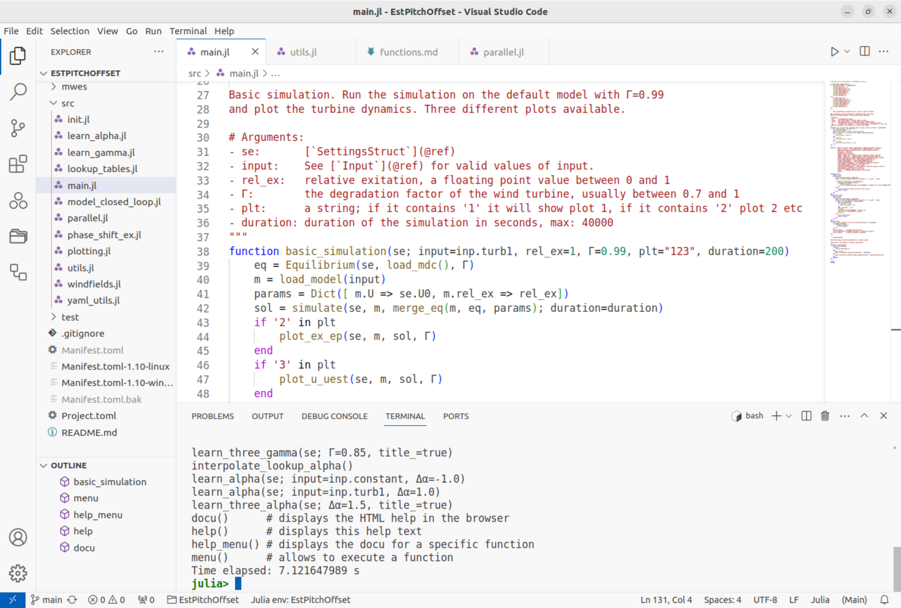

Installation and usage of VSCode
It is useful to install the integrated development environment VSCode, even though it is not required. You can also use any editor of your choice.
VSCode provides syntax highlighting, but also the feature "goto definition" which can help to understand and explore the code. 
You can download and install VSCode for all operating systems here.
Julia development with VSCode is well documented here.
I suggest to install the following Extensions:
- Julia
- Project Manager
- YAML
- Even Better TOML
VSCode has good, integrated GIT support by default, no extension is needed for that.
I would NOT use all the advanced features of julia-vscode, I prefer to just use the vscode terminal and launch Julia from the terminal. This makes it easy to launch Julia with any command line options and also to start and restart Julia quickly.